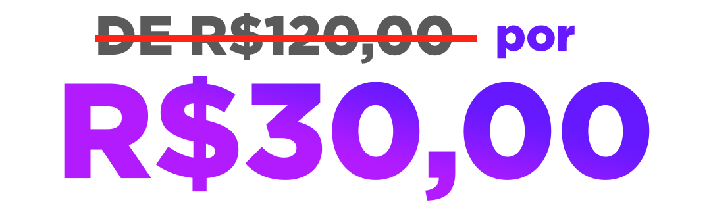

.png)
Aprenda Libras e aumente seus
lucros no mercado menos explorado do Brasil.
Se diferencie da concorrência e descubra o poder da comunicação inclusiva no mercado de trabalho e aumente seus ganhos em até X vezes. Uma imersão completa onde mostrarei o melhor método no aprendizado de Libras capaz de transformar sua vida financeiramente
07/08, das 18h até 21h
Online através do aplicativo zoom
O QUE SERÁ VISTO:
Você verá os seguintes assuntos na imersão:
- Como ser fluente na Libras: o que é necessário você fazer, quais caminhos pode escolher e quais benefícios poderá obter.
- Alfabeto manual e cumprimentos: saia da imersão sabendo dizer seu nome, dados pessoais e realizar os cumprimentos básicos que todo ser humano tem necessidade.
- Frases simples de acordo com a sua necessidade profissional. Como funciona o método de Libras da QSI
- De presente, você vai sair da imersão batizada na Libras. E o que é isso? Todos nós temos um sinal que nos representa na comunidade surda. Você terá o seu sinal dado especialmente por um professor surdo. (Acho que isso aqui pode ser um belo de um bônus)
- Com o conhecimento da Libras como você, profissional, pode aumentar suas expectativas de ganhos financeiros por ser um profissional bilíngue.
PARA QUEM É:
A Imersão Monetize com Vendas é para você, profissional da área da saúde, educação e atendimento ao cliente, que:
- Gostaria aumentar seus ganhos financeiros;
- Deseja se destacar dos concorrentes;
- Quer de fazer a diferença na vida dos surdos;
- Pretende aumentar sua clientela trabalhando com um público enorme e sem profissionais capacitados no país.
- Já estuda Libras mas quer um caminho mais rápido para se tornar fluente.
Com uma didática simples e autêntica, vou te mostrar ao longo de 3 horas como eu cheguei num nível de fluência, capaz de me comunicar com qualquer surdo e de qualquer lugar do Brasil, te mostrando exatamente como você pode aprender Libras em até 12 meses, possibilitando oportunidades incríveis na sua área profissional. Trabalhando com pessoas surdas, você estará apto a multiplicar seus ganhos financeiros em inúmeras vezes, além de praticar a inclusão na sociedade.
VOCÊ GARANTE SUA VAGA NA IMERSÃO MONETIZANDO COM A LIBRAS
QUEM SOU EU:
Olá, me chamo Luana Rodrigues. Sou Pedagoga, especialista em Libras e em educação de Surdos, Instrutora de Libras certificada pelo Prolibras e formadora de Intérpretes de Libras. Tenho convívio há 20 anos com a comunidade surda, e há 11 anos atuo profissionalmente no mercado. Sou mãe da Marie, casada, cristã, tdah e uma bela de uma multipotencial. Amo fazer muitas coisas e meu lema é: feito melhor que perfeito. Libras não é caro, é necessário. Libras não é lindo e maravilhoso, é apenas uma língua que deve e precisa ser aprendida por muitos brasileiros. Os Surdos não precisam ser amados, pois isto é papel da família; o seu é de ser um agente de transformação na vida dele.
F.A.Q
DÚVIDAS FREQUENTES SOBRE O EVENTO
Como acontecerá?
Será através do aplicativo Zoom. Assim que o pagamento for confirmado, você receberá o acesso da área de membros via e-mail, ao entrar na área de membros encontrará o link que acontecerá a imersão.
Para quem é a imersão?
Para quem é profissional da educação, saúde e atendimento ao público. Se você é um profissional de uma dessas áreas, a imersão é para você!
Qual é o dia?
A aula da imersão acontecerá no dia 7 (segunda-feira) de agosto. Terá início às 18h tendo no mínimo 3 horas de duração.
Terá gravação?
Sim, a Imersão será gravada e disponibilizada por 30 dias.
É seguro?
Sim, completamente seguro. Utilizo uma das maiores e mais seguras plataformas do mercado.